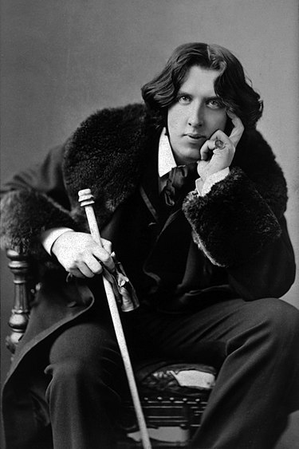

Escritor - Dramaturgo
Oscar Fingal O'Flahertie Wills Wilde
Biografia
Oscar Wilde fue el segundo de los tres hijos de dos destacados miembros de la sociedad angloirlandesa de Dublín. Esto sería esencial en su carrera y obra, como señaló un escritor contemporáneo suyo: Su padre, sir William Wilde, era el más importante cirujano especialista en otología y oftalmología de Irlanda, además de ser un notable arqueólogo y estadístico. La madre de Oscar, Jane Frances Agnes Elgee, era poetisa. Escribía para los revolucionarios jóvenes irlandeses y era conocida partidaria del nacionalismo irlandés. Escribió utilizando el seudónimo de Speranza («Esperanza» en italiano). Su hermano mayor, Willie Wilde (1852-1899) sería más tarde un destacado periodista para Punch y Vanity Fair, además de editorialista para The Daily Telegraph. Su hermana menor, Isola Francesca (1857-1867), murió de meningitis a los nueve años. Wilde le dedicaría su poema «Requiescat», escrito en 1875 y publicado en su primera antología,
Vida: Familia
Oscar Wilde fue el segundo de los tres hijos de dos destacados miembros de la sociedad angloirlandesa de Dublín.
sería esencial en su carrera y obra, como señaló un escritor contemporáneo suyo: Su padre, sir William Wilde, era el más importante cirujano especialista en otología y oftalmología de Irlanda, además de ser un notable arqueólogo y estadístico. La madre de Oscar, Jane Frances Agnes Elgee, era poetisa. Escribía para los revolucionarios jóvenes irlandeses y era conocida partidaria del nacionalismo irlandés. Escribió utilizando el seudónimo de Speranza («Esperanza» en italiano).18 Su hermano mayor, Willie Wilde (1852-1899) sería más tarde un destacado periodista para Punch y Vanity Fair, además de editorialista para The Daily Telegraph. Su hermana menor, Isola Francesca (1857-1867), murió de meningitis a los nueve años. Wilde le dedicaría su poema «Requiescat», escrito en 1875 y publicado en su primera antología, Poems (1881).
Obras
- El principe Feliz y otros cuentos
- El crimen de Lord Arthur Savile
- El retrato del señor W.H
- La decadencia de la mentira: Un diálogo
- Pluma, lápiz y veneno
- Dorian Grey
Familia
Cónyuge:
- Constance Lloyd
- Alfred Douglas (Amante)
Hijos:
- Cyril Holland
- Vyvyan Holland